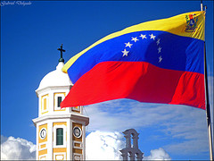
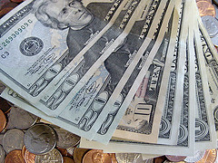

La economía de Venezuela
CADIVI una medida necesaria
En el año 2002 la economía venezolana tuvo un fuerte retroceso debido a diversos factores externos. Por ejemplo, el 11 de abril hubo un Golpe de Estado. Además la industria petrolera que es la principal fuente de ingresos del país tuvo un paro con sabotaje.
Las resultados de estas acciones contrarias al interés nacional causaron un impacto inmediato con una disminución de las reservas internacionales y de los ingresos petroleros. También causó una disminución en los aportes al tesoro público, desestabilización del valor externo de la moneda, inseguridad, inversión para atender la fatalidad ocasionada por la falta de combustible y de algunos alimentos de primera necesidad, a raíz del paro, entre otros.
A comienzos del año 2003 la economía venezolana sufrió un duro golpe y estuvo a punto de un colapso. Ante esta situación, el Gobierno Nacional decidió tomar una medida económica, que se va a mantener hasta que los desventajosos efectos causados a la economía nacional, desaparezcan. Así fue como el 5 de febrero, se establece así un sistema para controlar el cambio, tras un convenio firmado por el Ministerio de Finanzas, en representación del Ejecutivo Nacional y el Banco Central de Venezuela. Tras firmar el acuerdo el Presidente de la República, en Consejo de Ministros, estableció el 05 de febrero de 2003, la creación de la Comisión de Administración de Divisas (CADIVI).
La misión de CADIVI es administrar con eficacia y transparencia, bajo criterios técnicos, el mercado de cambio nacional con el fin de lograr la estabilidad económica y el progreso de la Nación, denominados como principios soberanos en la Constitución Nacional de la República Bolivariana de Venezuela.
Las reglas establecidas por CADIVI
He aquí algunos enunciados de la Providencia de CADIVI Nº 093 del 2008:
“La Comisión de Administración de Divisas (CADIVI) podrá autorizar para cada usuario hasta una suma máxima de dos mil quinientos dólares de los Estados Unidos de Norteamérica (US$ 2.500) o su equivalente en otras divisas por año. Es decir, en el período comprendido entre el 1° de enero y el 31 de diciembre, autorizará la suma para el pago con tarjetas de crédito de consumos de bienes y prestación de servicios, efectuados con ocasión de viajes al exterior”.
"La adquisición de efectivo para viajes al exterior, CADIVI podrá autorizar la entrega en efectivo o cheques de viajero, por una sola vez en el año calendario, es decir, en el período comprendido entre el 1° de enero y el 31 de diciembre, hasta cuatrocientos euros (€400) para usuarios con destino a los países señalados en listado publicado oficialmente en la página electrónica de CADIVI, o hasta quinientos dólares de los Estados Unidos de Norteamérica (US$ 500) para otros destinos".
“Cuando se trate de tarjetas de crédito usados para los fines previstos..., el usuario podrá disponer mensualmente de doscientos cincuenta dólares de los Estados Unidos de Norteamérica (US$ 250) deducibles de la suma establecida..., para adelantos de efectivo en moneda extranjera, los cuales sólo podrá obtener a través de los Cajeros Automáticos que se encuentran en el exterior”.
Los viajes al extranjero
Gracias al control de cambios cada venezolano (con tarjeta de crédito) dispone de un cupo o cuota de dólares para uso con la tarjeta en el exterior al año. Desde el extranjero se puede sacar en un cajero automático quinientos dólares al mes. Además antes de viajar se pueden pedir seiscientos dólares en efectivo o un cupo para compras por Internet de cuatrocientos dólares anuales. Todo esto a una tasa de cambio de 2,15 bolívares por dólar.
Esta tasa de cambio es irreal porque los venezolanos lo ven todo barato en el exterior, se lo quieren gastar todo o viajan sólo para sacar los dólares en comercios. Estos comercios cobran una comisión, pero los venezolanos llevan los dólares al país y los venden a una tasa más del doble que la tasa oficial. De hecho, hasta se ven carteles en las tiendas de las islas del Caribe, Panamá y hasta Miami que dicen: “Aceptamos cupos venezolanos”.
Así que hoy día los venezolanos viajan a Aruba, Curazao, Panamá, Miami y Colombia pero no para conocer las playas de arenas blancas de Aruba o porque quieran bailar en Andrés Carne de Res en Bogotá, sino por conseguir dólares. Para los venezolanos es un gran negocio porque consiguen los dólares con una tasa fija de 2,15 bolívares por cada dólar y después ilegalmente los venden al doble.
Las multas por comprar o vender dólares ilegalmente
Para el organismo que administra el control, CADIVI, esta práctica es malsana y es considerada un crimen cambiario. Los miembros de CADIVI estudian caso por caso el uso que se le ha dado a las divisas comparando los registros de las compras con información de entrada y salida del país, o viendo si se hacen muchas compras en un mismo sitio, en un mismo día o por sumas muy grandes. Si sospechan, el cupo es bloqueado y el usuario debe acudir a su banco a justificar con facturas, pasaportes y boletos el uso correcto de los dólares otorgados.
CADIVI publicó una lista con más de 85 mil nombres citados que deberán justificar sus gastos de viajes o electrónicos en los próximos 15 días. De no hacerlo no podrán tener cupo de viajes o electrónicos y serán multados con hasta el doble del la suma otorgada.